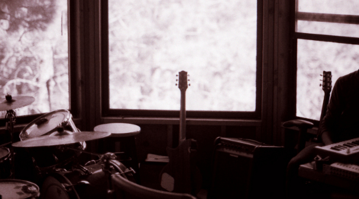
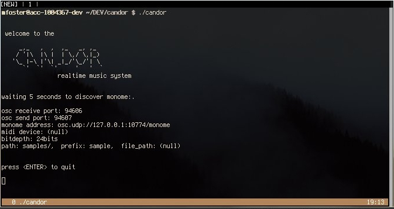

welcome to the candor realtime music system
this linux software enables a monome 256 user to capture and playback audio from up to 8 channels simultaneously, managing a maximum of 48 remembered wav soundfiles without a computer display. it is a client of the Jack Audio Connection Kit (http://jackaudio.org, http://www.monome.org/).
please file questions, concerns, and bugs on github or send directly to me at mrafoster@gmail.com.
Download candor from github and extract zip archive.
$ wget https://github.com/murrayfoster/candor/archive/master.zip $ unzip master.zip
Descend into extracted directory and build candor.
$ cd candor-master $ makeInstalling candor is optional. You can run it from anywhere on your system, installing just makes it more convenient to launch. If you do install, keep in mind you must run candor with a non-default directory by appending the "-pa" option.
# make install
Tidy up. Either remove sources (candor-master) or move them somewhere for later.
$ cd .. $ rm master.zip $ mv candor-master ~/src/.
$ ./candor -h welcome to the candor realtime music system Usage: candor [options] [arg] Options: -h, --help displays this menu -p, --port set osc interface receiving port. default: 94606 -sp, --send-port set osc interface sending port. default: 946407 -n, --name monome device name to connect to. no default -m, --monome disables serialosc, enables manual monome port configuration. no default -mi, --midi enables alsa midi device, ex: 'hw:VSL' -b, --bitdepth set bitdepth of capture to 8,16,24,32,64, or 128. default: 24 -pa, --path set directory of where to store captured sounds. default: 'samples/' -pr, --prefix set prefix name for all captured sounds. default: 'sample' -f, --file set path of session file to load preexisting sounds. see http://resinbeard.github.io/candor/ for documentation
A user may interact with candor using two methods: open sound control's network protocol or a monome.
candor itself provides an open sound control (http://opensoundcontrol.org) interface to ficus and candor available at port 94606. By passing the runtime option "-p" or "--port" at startup, this default port may be overridden. Specifics of this interface are further detailed in the open sound control section.
In order to access a monome, candor will by default use serialoscd's default port 12002 and focus on the first monome it finds. In order to manually assign a monome with a known address (like if you use multiple monome grids), pass the runtime option "-m" or "--monome" with the monome's serialosc port number at startup.
The monome's quadrants I and II provide main sampler/sequencer functionality while III and IV are used to assign sounds to each step of the sequencer. Functional aspects of this interface are described in the sampler and sequencer sections.
sampler,
Midi in candor is extremely limited. It uses raw alsa and only allows triggering of capturing armed sample and starting/stopping the sequencer. When starting candor, specify the "-mi" or "--midi" option and the alsa name of your midi interface such as "hw:VSL". Triggering samples thru midi allows one to trigger capture of multiple samples, one at a time, in the order they are armed on the monome interface. To trigger capturing of armed samples, send message from your midi device to channel #1 note #0. To start/stop the sequencer, send message thru your midi device channel #1 note #1.
Start serialosc and plug in your monome.
$ serialoscd serialosc [m256-114]: connected, server running on port 10774
Start jackd and then candor or start candor and jackd will be started automatically with your saved jackd settings.
$ qjackctl & $ ./candor
By default, candor will start up a temporary osc server on port 94606 and ask serialoscd for a list of devices. The port belonging to the first monome that is found will be selected for communication. After recording that port number, the original osc server exits and a new, permanent osc server is constructed again on port 94606. The new server is used as candor's osc's interface.

The sampler is candor's audio component. It is responsible for storing, recalling, capturing, playing back, and mixing 48 remembered sounds. For each of the sampler's features there is a monome-illustrated description.
The monome sampler interface is divided up into two main parts: the control row and the remembered sounds. between these elements lies a row which switches channel monitoring (we won't worry about this for now).
remembered sounds,
The control row represents a group of actions. The remembered sounds represent a group of items to act upon.
For example, pressing one of the remembered sounds will perform the action selected in the control row upon that pressed sound. There exist 8 different actions available from the control row, enumerated from left to right:
candor offers 8 capture and 8 playback channels. By way of the open sound control interface, each remembered sound may be captured/played from/thru any or all of the 8 channels at once. The monome interface offers 6 rows of 8 sounds, each row may capture/play from/thru any or all of the 8 channels at once.
The capture/playback channel assignment is one of the sampler's monome functions whose top-48 pads do not correspond to the remembered sounds. When you're in either of these modes, each row represents the enabled/disabled channels for that row of sounds, each row of pads representing channel capture/playback 0-7, left to right.
If we wanted to playback all sounds of the top row thru channel 1, we would:
If we also wanted to playback all sounds of the second from top row on channels 0, 3, 5, and 7:
Lastly, if we needed to capture audio from channel 0 to the top row and from channel 1 to the row underneath:
After assigning one or more capture channels, we are now ready to capture and store our first sound. If you haven't overridden the prefix or filepath defaults, new samples will be stored in the same location as candor, but in a new directory called "sounds".
There are three steps for capturing a sound using the monome:
The concept of "arming" has been introduced to prevent careless fingers from accidentally overwriting a hard-earned sound.
If we wanted to capture audio to sound 0 from its assigned channels, we would:
Finally, what we've all been waiting for: actually playing some audio. Of course, before we can make some noise, we must have already loaded a noise/sound. candor currently only supports wav files. Wav's must be mono and (should) share the same samplerate with your JACK server. Loading a sound can be accomplished by either:
If you'd like to provide a file containing a map of pre-existing sounds, you must create a new text file. It can be of any name, and containing on each line one soundfile's path followed by the sound number to map it to. Pass that file's location as an argument of runtime option "-f" or "--file".
For example, to map sounds across the first 8 of 48 sounds:
candorSession0.txt: /home/linuxuser/candor/samples/whackysound.wav 0 /home/linuxuser/candor/samples/crazysound.wav 1 /home/linuxuser/candor/samples/coolsound.wav 2 /home/linuxuser/candor/samples/mellowsound.wav 3 /home/linuxuser/candor/samples/groovingsound.wav 4 /home/linuxuser/candor/samples/surfysound.wav 5 /home/linuxuser/candor/samples/krautrocksound.wav 6 /home/linuxuser/candor/samples/wintersound.wav 7And then to load it:
candor --file ~/candorSession0.txt
If we wanted to playback audio from sound 0, we would:
When you set a sound to loop, you do two things:
If we wanted to set sound 0 to loop, we would:
candor provides a facility for predetermining how long a sound will capture for. Taking the duration from an existing sound (primary sound), the newly captured sound's duration is either the same length or a multiple of the primary sound. This will prevent your sound loops from drifting out of phase and allow them more predictable behavior.
For the rest of this section, it is assumed there is a sample already loaded in sound 0. We want to setup sound 8 for limited capturing. To limit capture time:
Hold control row pad 4 (capture limit) and press sound 0's corresponding pad; candor will use sound 0's duration for limiting all future sound captures.
Primary sound/blinking
Now, set the multiple of sound 0's duration to record sound 8 with. From top to left and top to bottom, the possibilites are [0-47]. We'll set it to 21 by pressing the corresponding pad, the LEDs will fill to represent that multiple. Sound 8 can now be captured.
Primary sound/blinking
There are two ways to stop a currently playing sound:
If sound 10 was playing and we wanted to stop it, we would:
If sounds 2, 5, 10, and 15 were playing and we wanted to stop all of them, we would:
For convenience, a row of the sampler is reserved for quickly monitoring each channel input through your soundcard's channel zero and channel one outputs. For more discreet monitoring during a live situation, consider reserving two of your soundcard's outputs for headphones-only monitoring.
If we wanted to monitor a soundcard's channel input six:
candor has simple effects to apply to each remembered sound. These are coarse playback speed, reverse playback, simple attack/decay envelopes, and click reduction.
playback speed row,
Along the "playback speed row", from left to right the speeds are ordered 25%, 50%, 75%, 100%, 125%, 150%, 175%, and 200%. To set the playback speed of a sound at 50% speed:
blinking
Along the "attack envelope" and "decay envelope" rows, the lengths of the envelopes are relative to the length of the affected sound. From left to right the envelope proportions are 0%, 1%, 5%, 10%, 25%, 50%, 75%, and 99%.:
The sequencer is candor's facility for coordinating the triggering of existing remembered sounds. It features a maximum of 48 steps, each step consisting of 6 optional voices.
The monome sequencer interface provides, instead of the 48 remembered sounds, a timeline/steps view (showing general sequencer position and allows toggling of each step's voices), a control row for thumbing thru each of the row's toggle "pages", coarse tempo/recordable tap tempo control, and toggling sequencer transport.
sequencer timeline/voice toggling
The default mode of the sequencer is the timeline view, an LED moving along the top 48 buttons representing the sequencer's current step in realtime. The next 6 buttons in the steps paging row represent each of the 48 steps; button 1 replaces the timeline view with steps 0-7, button 2 provides steps 8-15, provides 16-23 and soforth. Button 7 in this row pauses and resumes the sequencer's movement. Detailed, task-based desriptions follow in the coming minisections. Step-assignment is described in its own, full-sized section called assigning a sound to a step's voice.
Pausing the sequencer interrupts its "transport" or progression from one step to another. Once you resume transport, the sequencer picks up on the last step where it left off.
If we wanted to pause the sequencer from the monome:
If we wanted to resume the sequencer from the monome:
Through open sound control, candor provides a facility for either slaving the sequencer to the master clock of another external device or acting as its own master clock.
The clock output is on by default. A message will be sent out at each step of the sequencer. The path of the message '/candor/clock' is accompanied by an integer representing the sequencer's current step number (0-47). Connect to the osc sending port with your favorite program and you will see messages that look like the one below:
/candor/clock 45
The clock input is activated through the monome or another osc message described in the following subsections. Connect to the osc receiving port with your favorite program and send a message simply consisting of the path '/candor/clock'. Normal transport will turn off and the sequencer will advance each time the candor receiving port accepts a message with the prementioned path. For clarity an example of the message is shown:
/candor/clock
If we wanted to pause the sequencer from the monome:
If we wanted to resume the sequencer from the monome:
In candor it is possible use a monome to record a tap rhythm for the sequencer to follow. This feature will temporarily disable the internally clocked bpm transport.
If we wanted to record a tempo for the sequencer to follow:
If we wanted to resume non-tap-tempo sequencer operation:
Aside from tap-tempo, the sequencer's speed may be adjusted using coarse or fine controls.
The sequencer's coarse tempo controls are available from a horizontal slider in increments of 15, 30, 60, 120, 240, 480, 600, and 700bpm. Ranges are selected from smallest to greatest tempo, left to right.
The sequencer's fine tempo controls are located on the lower left-hand quadrant of the monome, one button on the left side of the step selection row and another on the right. Each press of the control raises or lowers the currently held tempo by 1bpm.
One of the more interesting features of candor is the ability to assign sounds recorded (or loaded) through the sampler to steps of the sequencer. This allows one to retrigger the playback of samples in a predictable manner. The sequencer consists of a total forty-eight steps, each step possessing six independent voices. That is, with every advancement of the playhead up to six unique sounds may be triggered at the same time. The bottom 128 keys of the monome are dedicated to step assignment, simple effects, and fine tempo adjustment. Effects and fine tempo adjustment will be discussed in a later section.
step/voice assignment,
There are three major components to assigning a sound to one of the sequencer's steps:
Selecting the current sound
Finding the correct step for step assignment
Assigning the selected sound to a voice
After a step's voice has been assigned, it must be toggled to trigger before the sequencer initiates playback.
In the previous section, sound 0 was assigned to step twenty-seven, voice two. This step/voice will be toggled for triggering.
The open sound control interface provided by candor expresses functions of Ficus and clock-related messages for the sequencer. While the osc interface can be used simulataneously with the monome, the monome may not update its interface for all state changes initiated by osc messages. Also keep in mind you have a maximum of forty-eight banks for sounds and eight channels in+out for related functions.
/candor/load si [path] [bank] -- loads a wav from filesystem
/candor/loop ii [bank] [state] -- sets looping state of a bank
/candor/setmixout iii [bank] [channel] [state] -- sets 1/on or 0/off state for mixing of capture/playback channels
/candor/setmixin iii [bank] [channel] [state]
/candor/jackmonitor iii [channel_out] [channel_in] [state] -- makes raw JACK port connections, 1/on 0/off
/candor/playback i [bank] -- plays back a sound
/candor/playback_speed if [bank] [speed_multiplier] -- sets playback speed of a sound, positive/negative multiplier
/candor/playback_rampup if [bank] [length] -- amplitude ramp, decimal fraction of sound
/candor/playback_rampdown if [bank] [length]
/candor/capture ii [bank] [seconds] -- begin capture on sound for n seconds
/candor/capturef ii [bank] [frames] -- begin capture on sound for n frames
/candor/durationf_out i [bank] -- get duration of sound in frames
/candor/durationf_in i [bank] -- get duration of captured sound in frames (may or may not be loaded in candor)
/candor/killplayback i [bank] -- stops playback of sound
/candor/killcapture i [bank] -- stops capture of sound
/candor/isplaying i [bank] -- returns whether sound is playing, 1/is and 0/isn't
/candor/iscapturing i [bank] -- returns whether sound is capturing
/candor/islooping i [bank] -- returns whether sound is looping
/candor/clock -- if clock input is turned on via monome, advance candor's sequencer by one step